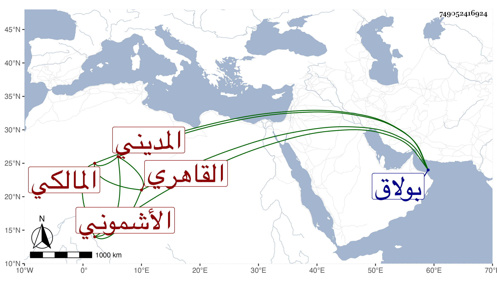

0902Sakhawi.DawLamic.ITO20230111-ara1.EIS1600.749052416924
Biography ID: 749052416924
1
محمد بن أحمد بن عثمان بن خلد شمس الدين الأشموني الأصل القاهري المديني المالكي ويعرف بابن الموله . ولد في جمادى الأولى سنة سبع وخمسين وثمانمائة وحفظ القرآن والشاطبيتين والرسالة والمختصر الفرعيين والكثير من شرح ثانيمهما للبساطي وجميع المنهاج الأصلي وأخذ الفقه عن نور الدين التنسى والعلمى والسنهوري واللقاني وداود شخص شرح الرسالة وكان في رواق الجبرت ولأصول عن الفخر عثمان المقسى والعربية وغيرها عن الزين الأبناسي والمنطق عن العلاء الحصني وكذا قرأ على خاله النور الكلبشي وابن قاسم في آخرين ، ولا زمنى في الرواية والدراية وكتب بعض تصانيفى ، وتميز في الفضائل وتكسب بالشهادة ثم ناب في القضاء عن اللقاني ثم ابن تقي ، وجلس في بولاق وبباب قاضيه عند المشهد النفيسي أياما لوثوقه به وشكرت سيرته ، وشرع في نظم المختصر وسرد بحضرتي الكثير منه ، وحج في سنة تسع وثمانين لا بأس به .
